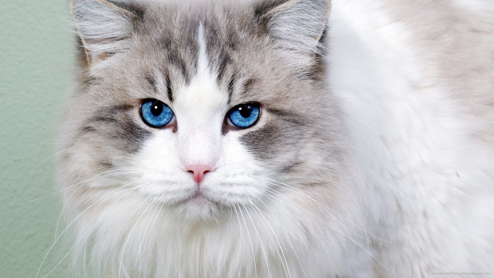

Unleasing Hope, A project driven by a passionate team of animal lovers who are comitted to rescuing, and rehoming homeless pets. There are millions estimated of homeless pets in local. Some were abandoned and many are the offspring of abandoned animals whose guardians moved and left them behind of dropped them by the side of the road when they could no longer care for them or just didn't want them anymore.
This aim to raise awareness about the issue faced by homeless pets and the importance of adoption. "Unleashing hope" not only focuses on the rescue and rehabilitation but also places great emphasis on responsible pet ownership by showcasing the unique stories and incredible journeys to these animal. We provide resources, guidance to potential adopters, ensuring a seamless transition for both the pets and their new families. We hope to inspire individuals and families to open their hearts and home to a deserving pet in need.
This aim to raise awareness about the issue faced by homeless pets and the importance of adoption. "Unleashing hope" not only focuses on the rescue and rehabilitation but also places great emphasis on responsible pet ownership by showcasing the unique stories and incredible journeys to these animal. We provide resources, guidance to potential adopters, ensuring a seamless transition for both the pets and their new families. We hope to inspire individuals and families to open their hearts and home to a deserving pet in need.